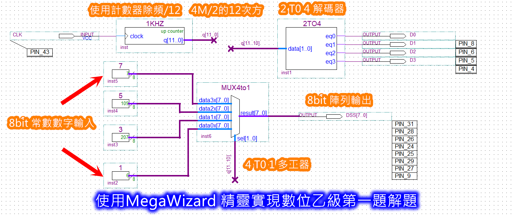
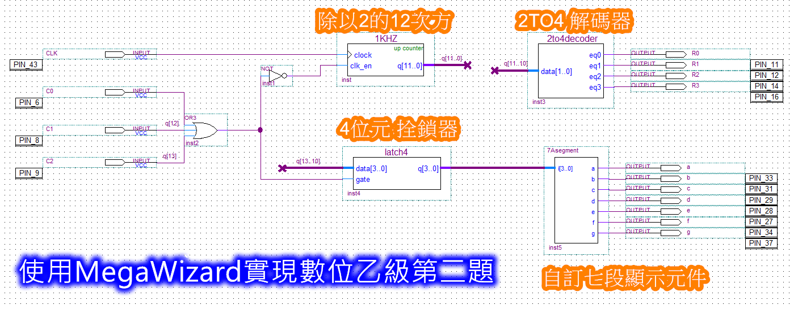

Quartus MegaWizard 精靈化設計 & J~N 顯示組別解析
使用 Altera MegaWizard Plug-In Manager 快速生成計數除頻器（LPM_COUNTER）、解碼器（LPM_DECODE）、多工器（LPM_MUX）與栓鎖器（LPM_LATCH），並完整支援 J～N 共 5 種抽測顯示組合與 AHDL 自訂七段元件！
3. 抽七段顯示器顯示內容：由 J～N 共 5 種組合抽 1 組測試
當場次應檢人測試同一組 · 試題一四位數顯示格式 + 試題二「*」與「#」特殊字型
{{ currentJnData.task1_rule }}
{{ currentJnData.task1_desc }}
「*」鍵與「#」鍵標準顯示字型
依照抽到的 {{ selectedJn }} 組，AHDL 程式中 H"3"（*鍵）與 H"B"（#鍵）必須輸出指定段碼！
AHDL: {{ currentJnData.star_ahdl }}
AHDL: {{ currentJnData.hash_ahdl }}
📋 勞動部技檢中心官方 J～N 抽測規定完整對照表
試題一：四位數循環顯示裝置（11700-110201）
計數器除頻（12-bit）➔ 2TO4解碼掃描（D0~D3）➔ MUX4TO1多工器輪播七段常數（DSS[7..0]）

12位元計數除頻器 (C12)
- • Data Width: 12 bits
- • 類型: Up Counter (上數)
- • Clock: 接外部 4MHz (PIN 43)
- • 輸出: q[11..10] 送解碼與多工
2TO4 顯示位元解碼器
- • LPM_WIDTH: 2 bits
- • LPM_DECODES: 4 outputs
- • 輸入: data[1..0] ← q[11..10]
- • 輸出: eq0~eq3 依序致能 D0~D3
8-bit 七段顯示常數 (4組)
- • 常數設定: 建立 4 顆常數元件
- • 數值依 J~N: 填入四位數字段碼
- • LPM_CVALUE: 填入 8 位元段碼值
- • 輸出: 分別接至 MUX data0x~data3x
4TO1 8-bit 資料多工器
- • Data Width: 8 bits
- • Number of Inputs: 4 inputs
- • 選擇端: sel[1..0] ← q[11..10]
- • 輸出: result[7..0] 輸出至 DSS
🧮 掃描除頻公式與視覺暫留原理
4 MHz (石英震盪) ÷ 4096 = 976.56 Hz（總掃描頻率）➔ 4 位數輪掃每位數約 244.14 Hz（每 4.1ms 完成一輪），人眼視覺暫留無閃爍！
試題二：鍵盤輸入顯示裝置（11700-110202）
4x3矩陣鍵盤掃描 ➔ OR3按鍵偵測 ➔ LPM_LATCH 4位元鎖存 ➔ AHDL自訂七段元件解碼

🎹 4x3 矩陣鍵盤按鈕模擬
點擊鍵位觀察解碼💻 自訂顯示元件 7Asegment.tdf (AHDL 語法)
🧩 Quartus II MegaWizard 6 大核心精靈元件速查庫
點擊各元件卡片查看精靈分類路徑、參數設定、引腳連線定義與考場避坑技巧
1. 計數除頻器 (C12)
Arithmetic > LPM_COUNTER- Data width = 12 bits
- Up counter only (向上計數)
- 勾選 clock、q 輸出、clk_en (使能)
2. 解碼器 (DECODE24)
Gates > LPM_DECODE- LPM_WIDTH = 2 (輸入2位元)
- LPM_DECODES = 4 (輸出4位元 eq0~eq3)
- 輸出為 Active High (高有效)
3. 多工器 (MUX4TO1)
Gates > LPM_MUX- Width of data input = 8 bits
- Number of data inputs = 4 (data0x..data3x)
- sel[1..0] 由 q[11..10] 控制
data0x[7..0]），避免引腳線寬不匹配。4. 8-bit 常數產生器
Gates > LPM_CONSTANT- LPM_WIDTH = 8 bits
- 填入 10 進制或 16 進制段碼數值
- 每題共需建立 4 顆常數
5. 4位元栓鎖器 (LATCH4)
Storage > LPM_LATCH- Data width = 4 bits
- 啟用 gate 控制端（由 OR3 驅動）
- data[3..0] ← q[13..10]
6. AHDL 自訂七段元件
File > New > AHDL Design File- 存檔檔名必須與 SUBDESIGN 一致（
7Asegment.tdf） - 執行
File > Create/Update > Create Symbol - 在電路圖中雙擊即可放置該元件
END TABLE; 與 END;。📖 Altera MegaWizard + AHDL 投影片講義 簡樹桐老師 編著
市立楊梅高中 · 數位邏輯與 CPLD 實作（共 11 頁全彩精華投影片）